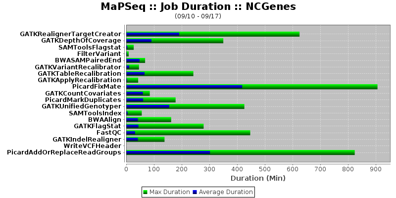

Reporting
MaPSeq has a suite of reports that can be run to better visualize how long jobs are taking to run on average and at max duration. These reports also indicate where your jobs have been run overall and on a per Workflow instance. As a prerequisite, the user must connect to the console:
$ ssh -p 8101 -l karaf <serverName>
Here are a few examples:
Weekly Report
The command to run this from the MaPSeq console:
$ mapseq:generate-weekly-report <email.address>
Workflow Jobs Weekly Report
The command to run this from the MaPSeq console:
$ mapseq:generate-workflow-jobs-weekly-report <workflowId> <email.address>
